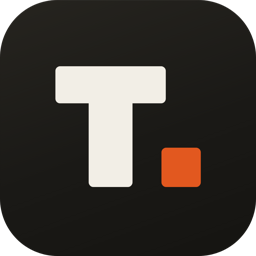

Tokef. תומר צורף · 050-8882972אישורי קיום ביטוחים של קבלני משנה
Tokef קוראת את אישור הביטוח של קבלן המשנה, משווה אותו לדרישות הביטוח בחוזה ועונה מיד: מותר להיכנס, או חסום, וזה מה שחסר. תזכורת לקבלן ולסוכן יוצאת לבד לפני שהאישור פג.
סרטון של כשתי דקות, עם קריינות בעברית.
קבלן המשנה מקבל קישור בוואטסאפ, בלי הרשמה ובלי אפליקציה, ומעלה את אישור קיום הביטוחים מהטלפון.
סכומים, קודי כיסוי, מבוטח נוסף, ויתור על תחלוף ותאריכי תוקף, מול נספח הביטוח של הפרויקט.
מותר להיכנס, או חסום עם רשימה של מה שחסר. בקשת תיקון יוצאת בלחיצה.